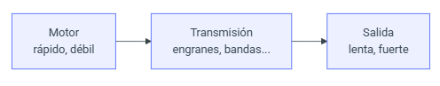
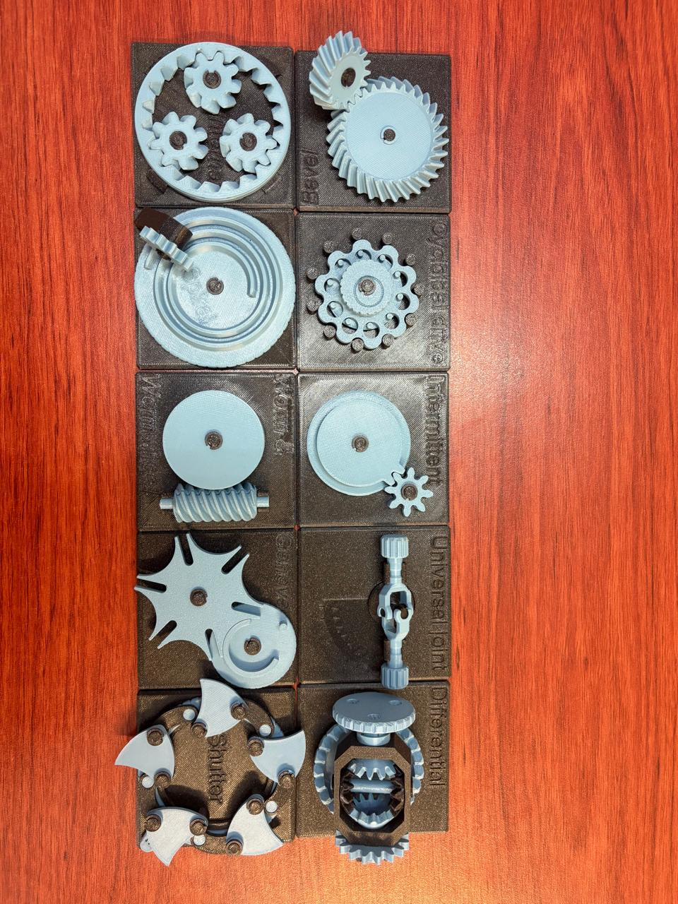
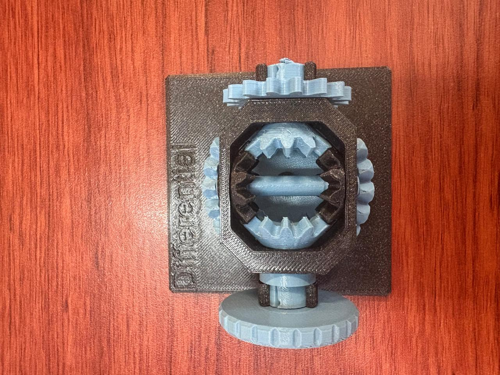
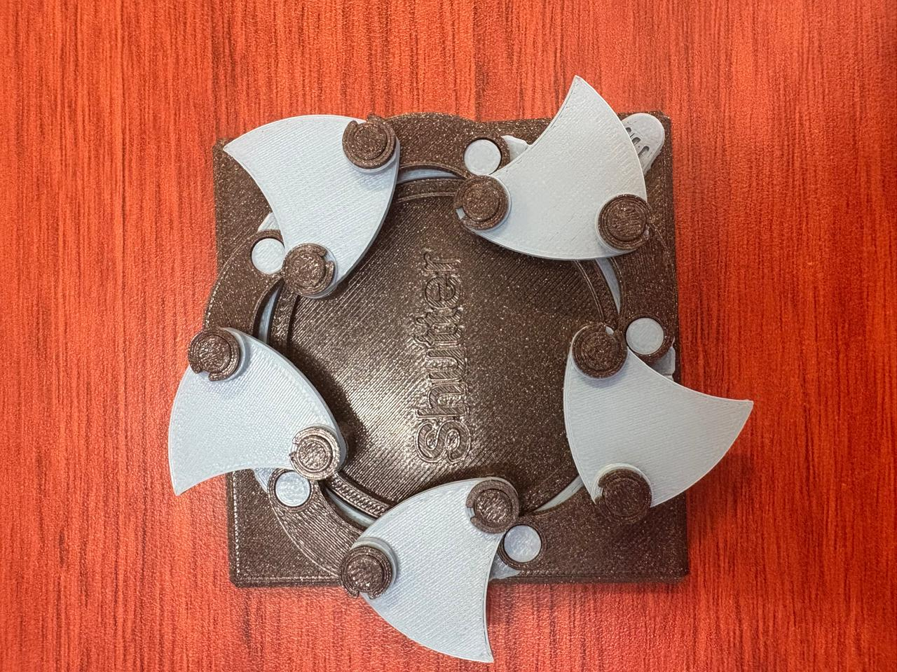
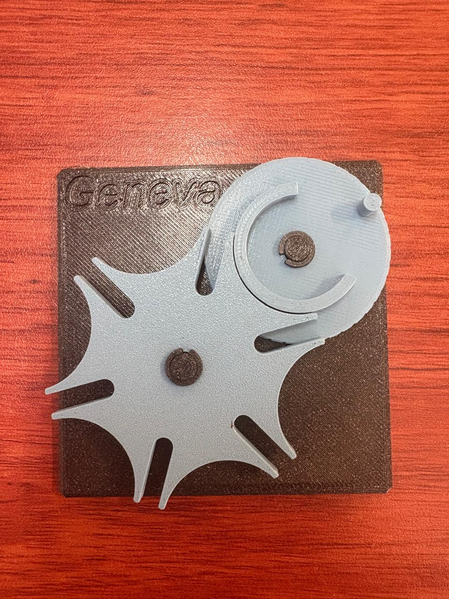
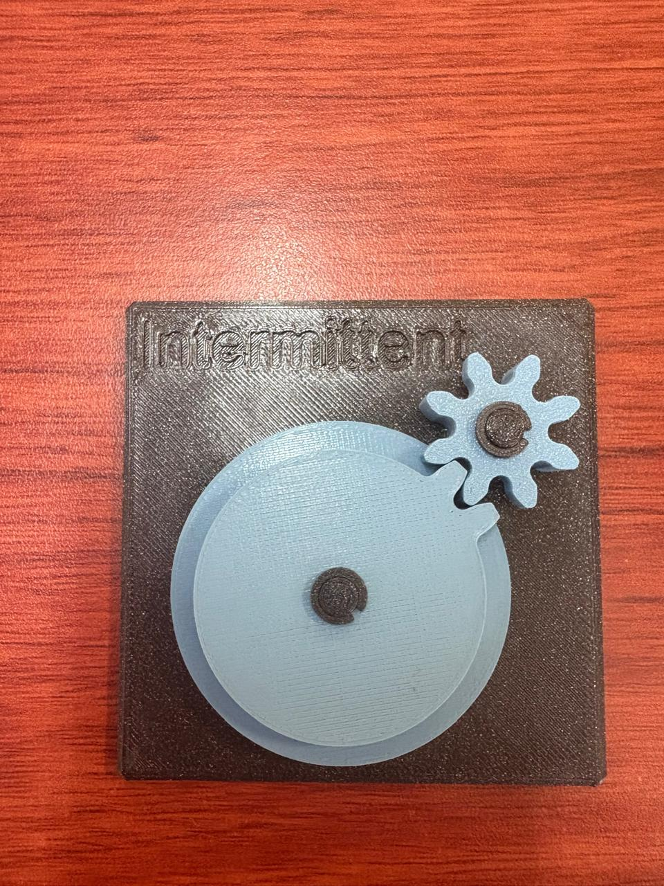
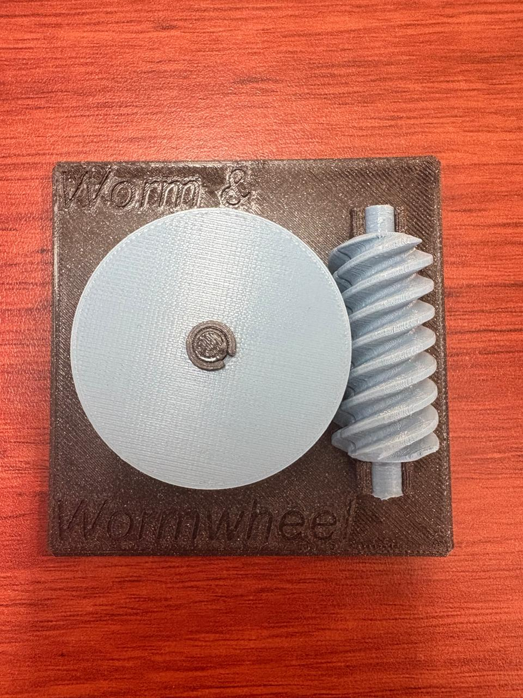
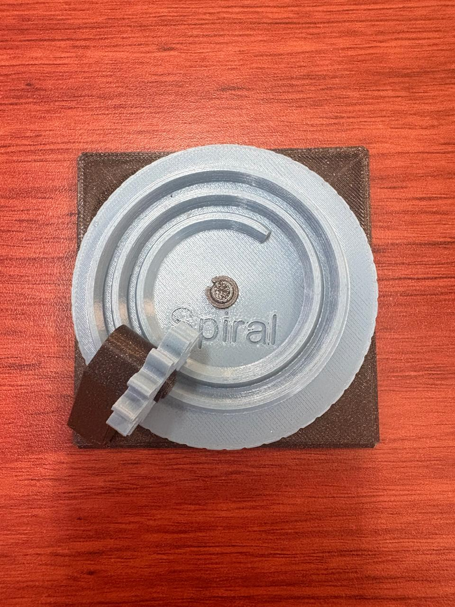
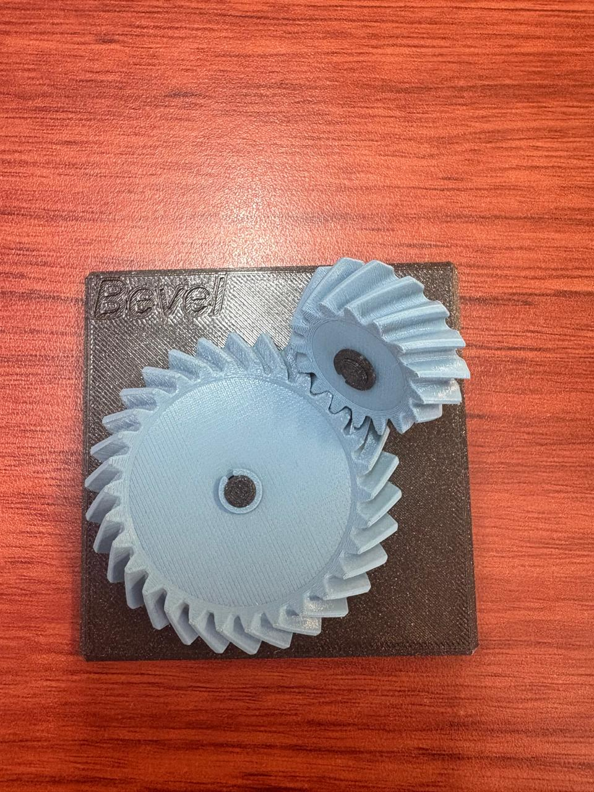

Sesión 5 — Mecanismos y relaciones de transmisión
Qué debía lograr hoy
- [✅] Entender cómo los mecanismos transforman el movimiento.
- [✅] Calcular relaciones de transmisión simples.
Qué usé
Modelos 3D de: planetary, bevel, spiral, cycloidal drive, worm drive, pulley, intermittent, geneva, universal joint, shutter y differential.

Un motor rápido y débil se convierte en una salida lenta y fuerte mediante engranes o bandas.
Teoría: relación de transmisión
La relación de transmisión i compara un engrane de entrada (motriz, Z₁) con uno de salida (conducido, Z₂):
| Caso | Tipo | Efecto en la salida |
|---|---|---|
| i > 1 | Reductor | Gira más lento, con más par (fuerza) |
| i < 1 | Multiplicador | Gira más rápido, con menos par |
- Trenes compuestos: las relaciones de cada etapa en serie se multiplican. Por ejemplo, 4 × 16 = 64.
- Ejemplo: piñón de 12 dientes y engrane de 36 dientes, entonces i = 36/12 = 3. La salida gira a 1/3 de la velocidad con 3 veces el par.
Los engranes no crean energía, solo la convierten: cambian velocidad por fuerza o al revés, según los dientes de cada uno (sin contar pérdidas por fricción).
Ejercicio: relación de transmisión
Datos
| Caso | Motriz | Conducido | Dato conocido |
|---|---|---|---|
| A | Z₁ = 5 | Z₂ = 10 | ω₂ = 10 rpm, τ₁ = 1 N·cm |
| B | Z₃ = 5 | Z₄ = 20 | ω₃ = 20 rpm, τ₃ = 4 N·cm |
Incógnitas: ω₁ y τ₂ (caso A); ω₄ y τ₄ (caso B).
Caso A
Caso B
Resultados
| Caso | i | Velocidad | Par |
|---|---|---|---|
| A | 2 | ω₁ = 20 rpm (entrada), ω₂ = 10 rpm (salida) | τ₂ = 2 N·cm |
| B | 4 | ω₄ = 5 rpm | τ₄ = 16 N·cm |
Conclusión: en ambos casos i > 1, así que el sistema reduce la velocidad y multiplica el par por el mismo factor.
Tabla de estaciones
| Estación | ¿Qué transforma? | Relación i | ¿Reversible o autobloqueante? | Vida real | Aplicación en el carro o proyecto |
|---|---|---|---|---|---|
| A · Diferencial | Reparte un giro de entrada en dos salidas con distinta velocidad y el mismo par | Corona-piñón ≈ 3:1 a 4:1; satélites 1:1 | Reversible | completar | Permite que las ruedas giren distinto en curvas |
| B · Reductor cicloidal | Velocidad y par: gran reducción en poco espacio y poco backlash | cuenta vueltas de entrada por cada una de salida | Casi autobloqueante (mucha fricción interna) | Modelo de práctica (engrane azul con lóbulos internos) | Articulaciones de robots; dirección asistida |
| C · Junta cardán | Cambio de eje: transmite giro entre ejes con ángulo; la salida acelera y desacelera dos veces por vuelta | 1:1 en promedio, con fluctuación | Reversible | Modelo de práctica (junta azul) | Flecha entre caja de velocidades y diferencial |
| D · Obturador (shutter) | Continuo a intermitente: una entrada mueve varias láminas sincronizadas | depende del número de láminas | No autobloqueante | Modelo de práctica (obturador negro con aspas azules) | Diafragma de cámara; iris para regular aire o luz |
| E1a · Cónico recto (bevel) | Cambio de eje a 90° con dientes rectos en forma de cono | i = Z₂/Z₁ (cuenta dientes de piñón y corona) | Reversible | completar | Cambiar la dirección del giro del motor hacia las ruedas |
| E1b · Cónico espiral (spiral) | Cambio de eje a 90° con dientes en espiral (contacto más suave que el cónico recto) | i = Z₂/Z₁ (cuenta dientes de piñón y corona) | Reversible | completar | Par cónico del diferencial trasero |
| E2a · Engrane intermitente (intermittent) | Continuo a intermitente: la entrada gira sin parar y la salida avanza con pausas | depende de los dientes y de las pausas por vuelta | No autobloqueante | completar | Avance por pasos de un mecanismo |
| E2b · Ginebra (geneva) | Continuo a intermitente: cada vuelta de la entrada mueve la salida un paso fijo | 1 vuelta de entrada = 1/n de vuelta de salida, con n ranuras | Se traba en la pausa | completar | Indexar posiciones (selector o carrusel) |
| F · Planetario (planetary) | Velocidad y par: reducción compacta con ejes en el mismo centro | depende de qué elemento se fija (sol, planetas o corona) | Reversible | completar | Reducción compacta en un motorreductor |
| G · Tornillo sin fin (worm) | Cambio de eje a 90° con reducción muy grande en una sola etapa | i = Z_rueda / entradas del tornillo | Autobloqueante (la rueda no mueve al tornillo) | completar | Mecanismo que no debe retroceder al apagar el motor |
| H · Polea (pulley) | Velocidad y par con banda entre dos ejes separados | i = D₂/D₁ (diámetros de las poleas) | Reversible | completar | Transmitir el giro del motor a un eje alejado |

Engranajes completos

Diferencial

Shutter

Universal joint

Geneva

Intermittent

Worm

Spiral

Bevel
Qué falló y cómo lo resolví
- Síntoma: al calcular la relación de transmisión, mi resultado del ejercicio no coincidía con la teoría. En el cuaderno obtuve i = 1/2 para 5 y 10 dientes, pero la fórmula de la teoría daba i = 2.
- Cómo lo encontré: comparé las dos definiciones y vi que estaban invertidas. En el cuaderno usé Z_motriz / Z_conducido y en la teoría Z_conducido / Z_motriz. Además, cuando el conducido tiene más dientes, la salida gira más lento, así que la velocidad de salida se divide entre i y el par se multiplica por i.
- Solución: usé una sola convención en toda la práctica, i = Z_conducido / Z_motriz, y volví a calcular los dos casos. Con i > 1 el sistema reduce la velocidad y multiplica el par, y los resultados quedaron coherentes con lo que vimos en los modelos.
Qué aprendí
Entendí que un engrane no da "más fuerza" gratis: la fuerza que gana la salida es la velocidad que pierde, y la relación de transmisión mide ese intercambio. Antes pensaba que todos los mecanismos solo servían para reducir velocidad, pero en las estaciones vi que algunos cambian el eje de giro (cónicos y sin fin), otros convierten un giro continuo en intermitente (ginebra e intermitente) y otros reparten el movimiento entre dos salidas (diferencial). También aprendí que algunos mecanismos se pueden mover desde la salida y otros no: el sin fin se autobloquea, por eso sirve cuando el sistema no debe retroceder al apagar el motor.
Siguiente paso
Completar la columna "Vida real" de la tabla de estaciones y calcular la relación i de los mecanismos donde solo puse "cuenta dientes".